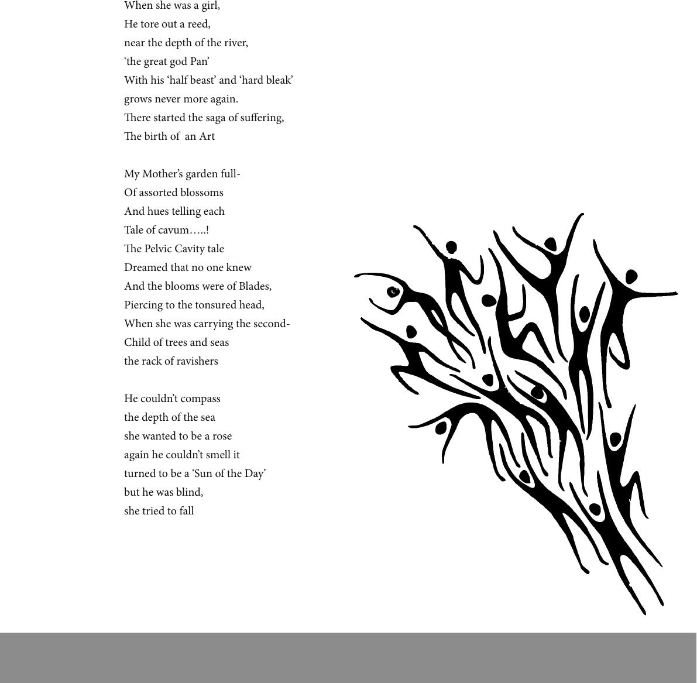

When she was a girl,
He tore out a reed,
near the depth of the river,
‘the great god Pan’
With his ‘half beast’ and ‘hard bleak’
grows never more again.
ere started the saga of suering,
e birth of an Art
My Mother’s garden full-
Of assorted blossoms
And hues telling each
Tale of cavum…..!
e Pelvic Cavity tale
Dreamed that no one knew
And the blooms were of Blades,
Piercing to the tonsured head,
When she was carrying the second-
Child of trees and seas
the rack of ravishers
He couldn’t compass
the depth of the sea
she wanted to be a rose
again he couldn’t smell it
turned to be a ‘Sun of the Day’
but he was blind,
she tried to fall